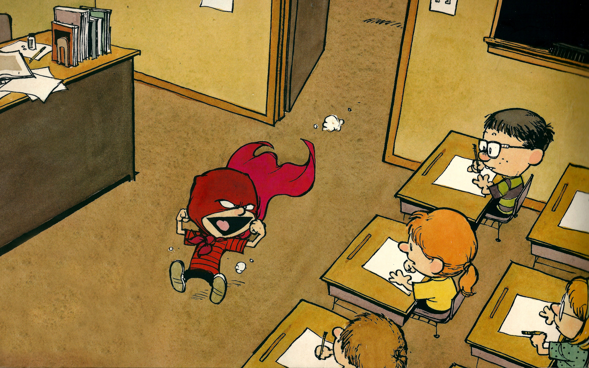
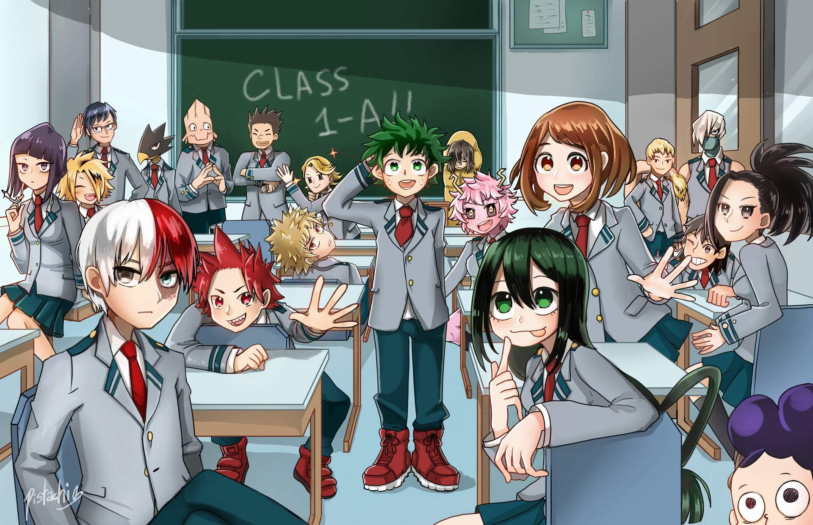

Формы воспитательной работы являют собой комплекс приемов и средств воспитания, которые отражают содержание воспитательной деятельности. Выбор конкретной воспитательной формы зависит от целей и задач воспитания, его содержания, возрастных особенностей учащихся, степени их воспитанности и наличия персонального общественного опыта, квалификации педагогического состава и способности педагогов к применению творческого подхода в воспитании. Предложенные мини-формы ориентированы на 5-6 класс.
«Что на что похоже?». Реализовать можно так: 3-4 человека (отгадчики), выходят за дверь, а остальные договариваются, какой предмет будут сравнивать. Когда отгадчики вернутся, ведущий говорит: «То, что мы загадали, похоже на…» - и дает слово тому, кто первым нашел сравнение и поднял руку: на цветок… на бабочку… на винт вертолета… на восьмерку, которая лежит на боку… Отгадчики должны догадаться, что это бант.
«Снежный ком». По кругу каждый называет свое имя и имена всех уже назвавших перед ним. Эту мини-форму можно применить для знакомства и сплочения для 5 класса.
«Путаница». Каждый берет за руки двух разных людей стоящих, желательно, не рядом. Задача – не разнимая рук распутаться в новый круг. Для чего используется форма: сплочение и бережное отношение друг к другу, снятие возбуждения. Перед началом распутывания рекомендуется отметить необходимость бережного отношения друг к другу, уникальность и ценность каждого. Можно использовать для завершения занятия.
«Белые медведи». 2-3 человека берутся за руки цепочкой: они «белые медведи». Задача – замкнуть цепочку вокруг остальных участников «пингвинов». Пойманный «пингвин» становится «медведем».
«Имена – качества». Каждый придумывает какое-либо качество личности, свойство характера и т.д., начинающееся на ту же букву, что и имя (например: Лариса – любовь, Сергей – скромность), которое он мог бы привнести в эту группу сегодня. Цель - знакомство, создание доброжелательной атмосферы, работа по осознанию себя как личности.
«Знакомство по парам». Участники разбиваются по парам, желательно по принципу наименьшей «знакомости». В течение 10 минут рассказывают друг другу о себе, потом представляют партнера остальным участникам, говоря о нем от первого лица, стоя за спиной и положа руки на плечи сидящего впереди партнера. Затем упражнение обсуждается. Знакомство, опыт общения, опыт восприятия информации о другом и о себе со стороны. Внимание к личности другого. Способствует созданию безопасной атмосферы. Упражнение может вызвать сильные переживания, во время обсуждения надо это учитывать.
«Поиск общего». Группа делится на двойки, и два человека находят определенное количество общих признаков, затем двойки объединяются в четверки с той же целью и т.д. Знакомство, внимание к личности другого и осознание проявлений своей личности. Ведущий по своему усмотрению может остановить процесс на четверках, восьмерках и т.д.
«Построиться по…». Участники строятся в шеренгу по любому признаку (рост, вес, цвет волос, величина ладони, веселость, активность и т.д.) Цель - разрядка, сплочение. Осознание относительности любой системы оценки. Важен комментарий ведущего по поводу разных систем оценки. Это может помочь осознать ученику: первый он или последний - зависит не от него, а от оцениваемого критерия.
«Дракон». Все участники встают в цепочку. Первый – «голова дракона», последний – «хвост». Голова должна поймать хвост. Мини-форма используется для разрядки, сплочения коллектива.
«Зоопарк». По предложению ведущего все изображают каких-либо животных (движения и звуки) Мини-форма применяется для разрядки, позволяет проявить фантазию, способствует выходу энергии
«Зеркало». В парах один человек повторяет движения другого. Вариант – вся группа повторяет движения одного. Здесь происходит межличностное взаимодействие, набирается опыт ведения и ведомости. Однако мини-форма возможна для проведения при хорошем уровне «разогретости» группы.